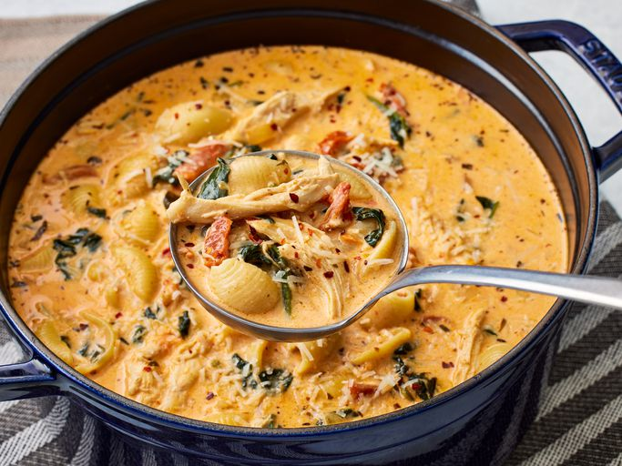

Chicken Soup

How to make Chicken Soup
Maybe you have heard of Marry Me Chicken before, a delicious dish of sautèed chicken blanketed in a creamy sun-dried tomato sauce that "is worthy of a marriage proposal!"
It can be enjoyed on its own or served over pasta or rice for an extra hearty meal. But it can also be turned into an irresistible soup for a perfect bowl of comfort all in one pot.
Ingredients
- Sun-dried tomatoes: The soup features julienne-cut sun-dried tomatoes in oil with herbs as a main component that packs sweet, tart flavor.
- Aromatics: Onion, garlic, and tomato paste round out the rest of the flavor base.
- Broth: Chicken broth and heavy cream combine to create a rich liquid.
- Pasta: Medium shell pasta is cooked right in the soup (you can also swap in your favorite small pasta shape).
- Chicken: Store-bought rotisserie chicken is used here as an added shortcut.
- Seasonings and garnishes: Finally, we bring balance to the soup with basil, red pepper flakes, spinach, cream cheese, and Parmesan for extra umami goodness.
How to make it
- Once you have everything gathered, start by sautéing the onion and garlic in the oil from the sun-dried tomatoes.
- Then add in the tomatoes and tomato paste before pouring in broth, cream, and seasonings. Simmer this base together before adding the dried pasta to cook directly in the soup until al dente.
- Spinach and shredded rotisserie chicken go in toward the end to warm through, along with the cream cheese, Parmesan, and final garnishes for big spoonfuls of delicious flavor.